A round with friends. A drink after the game. A place to play all year.
Swipe to explore. Stay for a round.
1 / 27
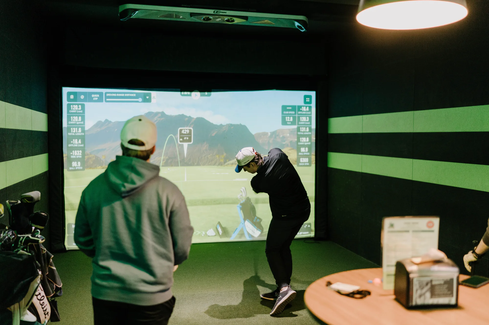
A golfer takes a shot while a friend watches in an AVID simulator bay.Friends watching a golfer finish a swing.
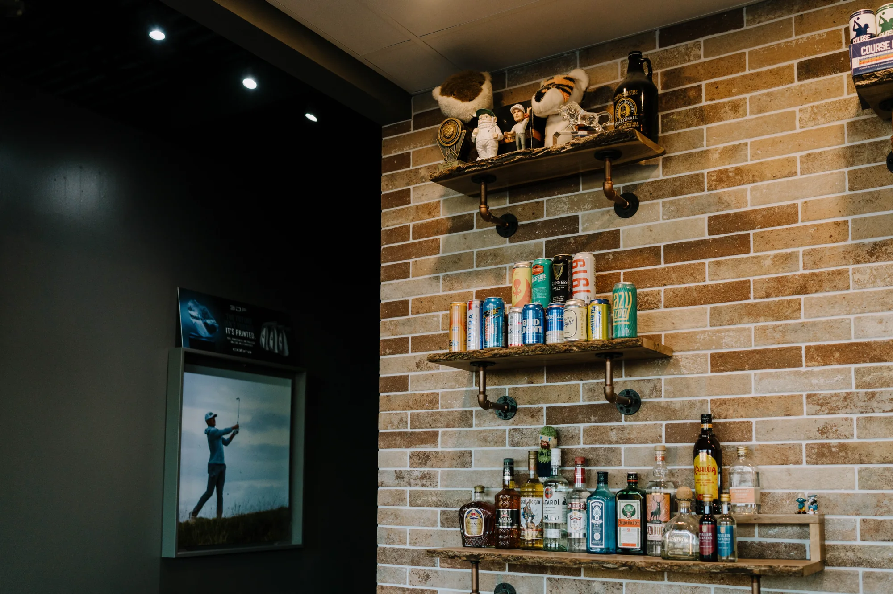
Drinks and golf memorabilia on the AVID bar shelves.
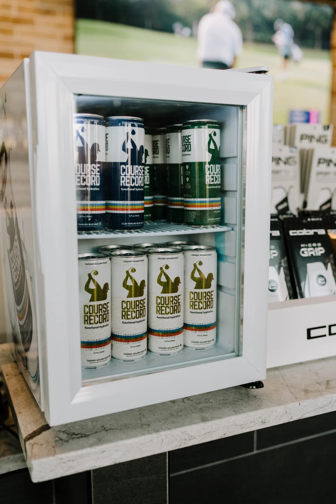
Chilled Course Record drinks at the front bar.A golfer selecting options on the simulator computer.
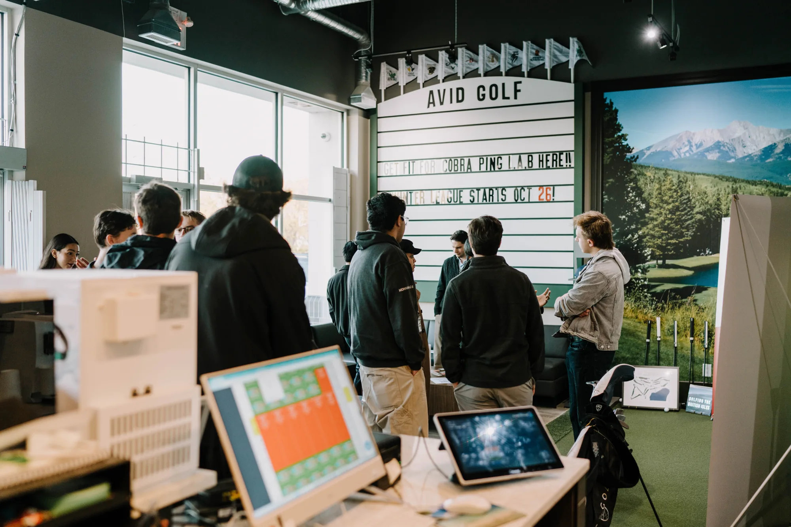
Guests gathering near the entrance at AVID Golf.
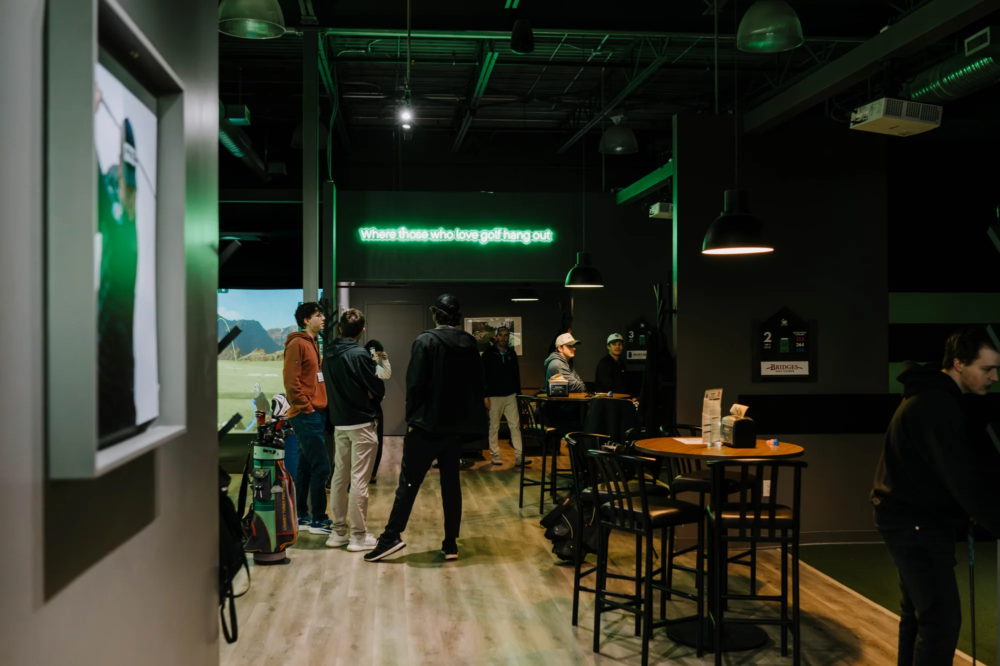
Friends beneath the neon golf slogan inside AVID.
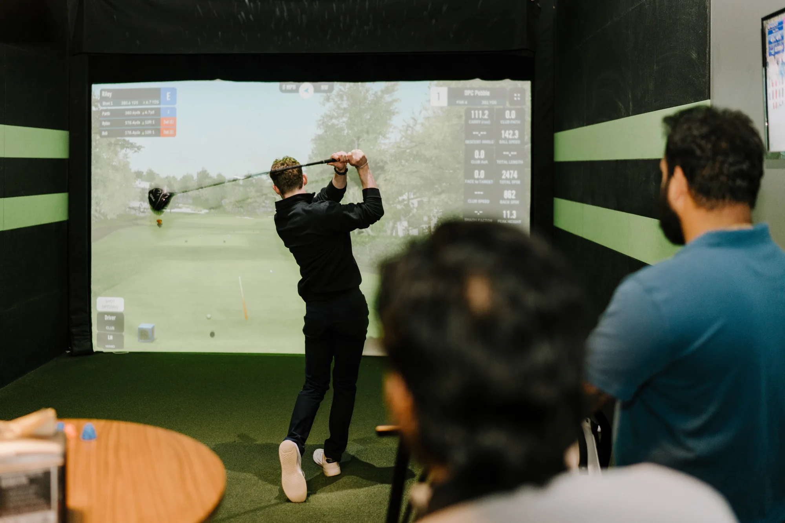
A golfer finishing a drive with friends watching.
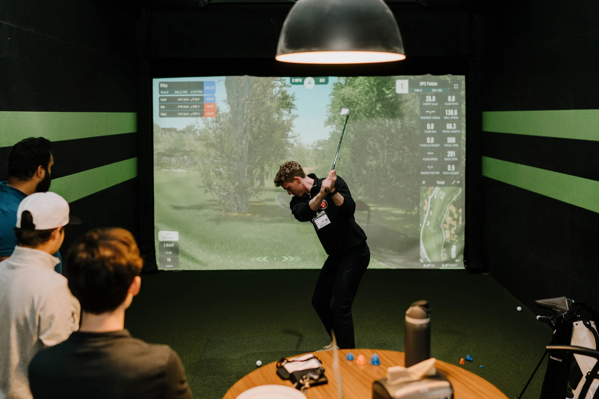
A golfer taking a backswing in the simulator.
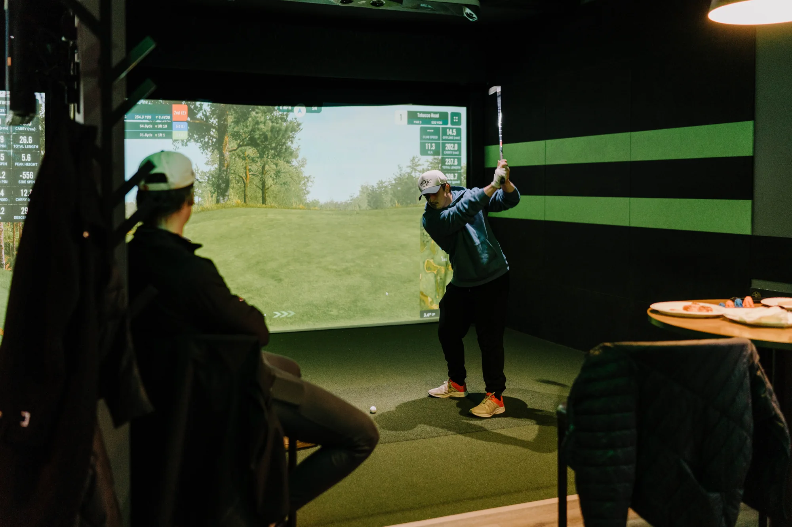
A golfer in a blue hoodie playing a shot.
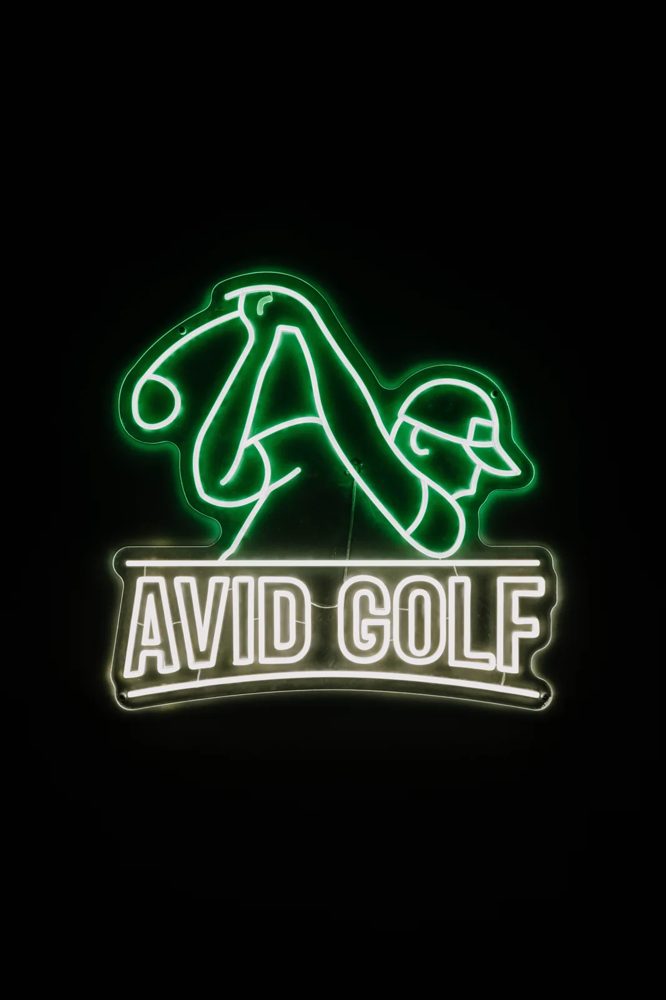
The illuminated green and white AVID Golf logo.
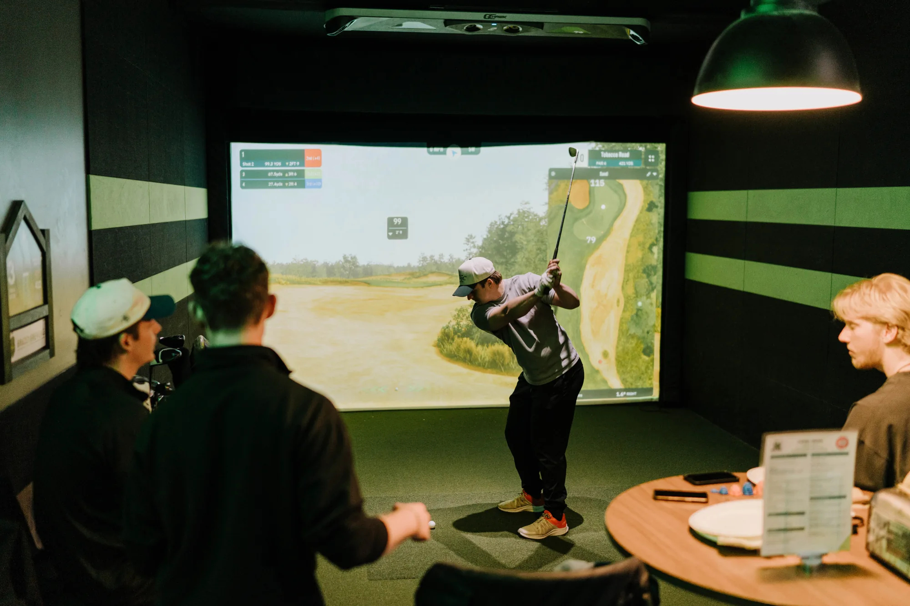
Friends watching a golfer play an approach shot.Friends watching a golfer play in an AVID simulator bay.Golfer completing a swing in an AVID Golf simulator bay.Two golfers reviewing a tablet during a club fitting at AVID Golf.
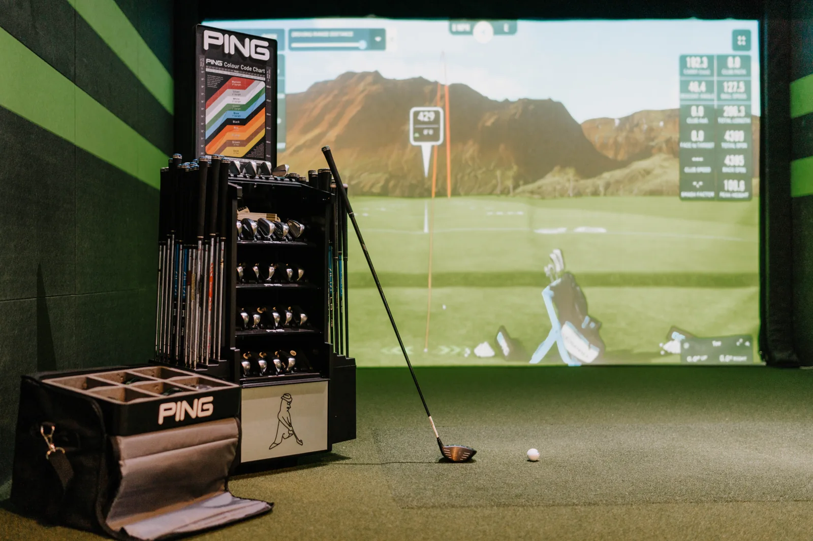
PING fitting equipment beside a simulator screen at AVID Golf.
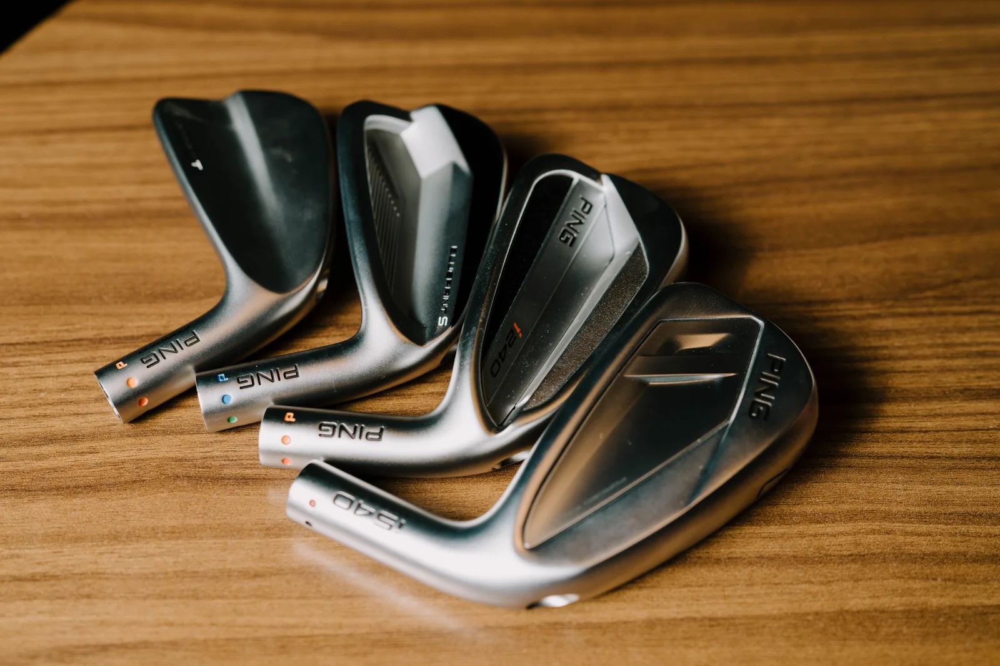
Selection of iron clubheads on a wooden table.AVID simulator bay with seating and a projected golf course.Guests chatting beside the simulator bays at AVID Golf.Guests gathering at AVID Golf.Golfer swinging as friends watch from the table.
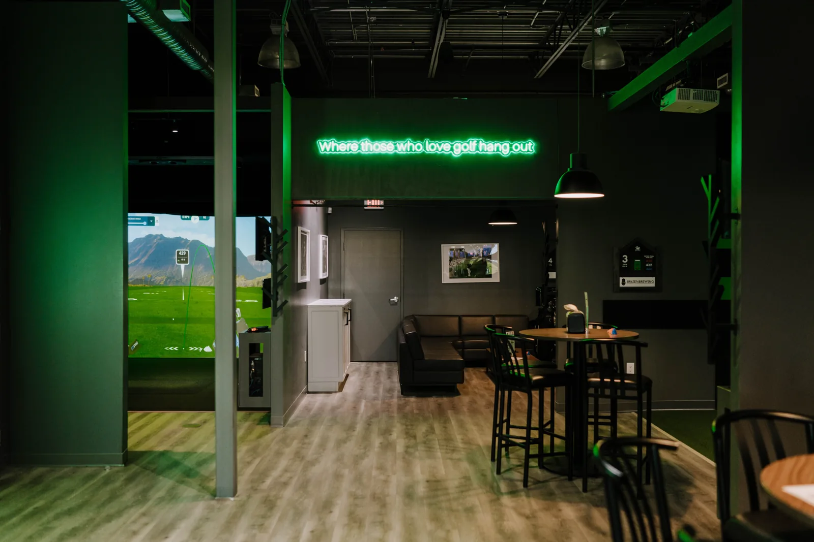
Inside AVID Golf with simulator bays and clubhouse seating.Sofas and seating in the AVID Golf lounge.Golf hats on display at AVID Golf.AVID Golf ball and iron on the simulator turf.
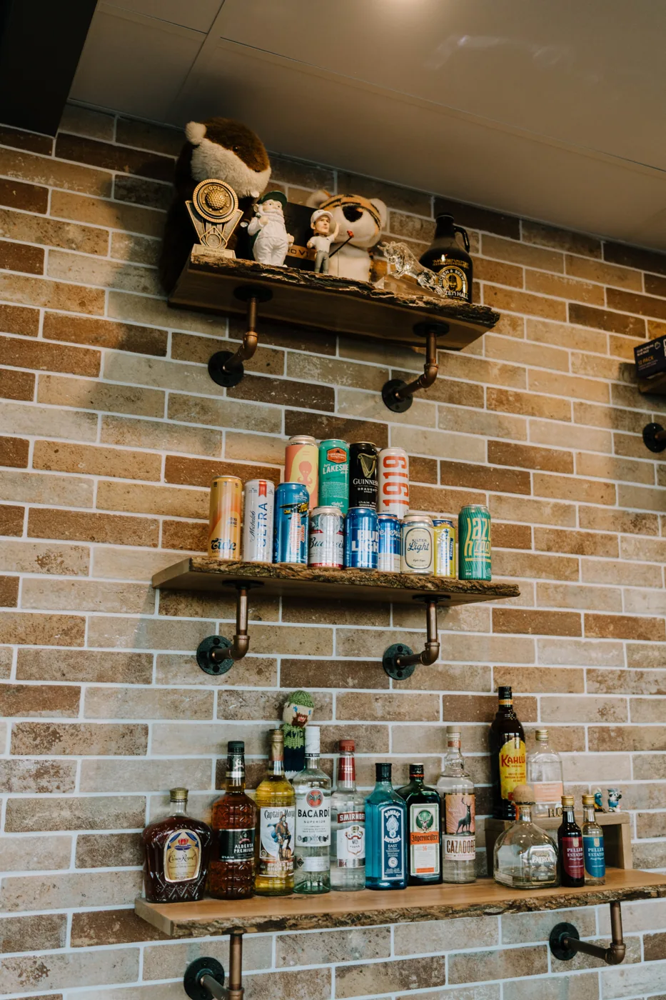
Bar shelves at AVID Golf.Illuminated AVID Golf logo inside the clubhouse.